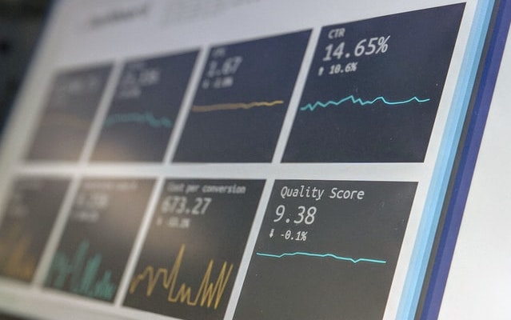

I am a dynamic Digital and Analytics Expert with 12+ years of combined experience in Data Science, R&D and Engineering.
Initiated, managed and delivered over 40 data and digital transformation products across Oil and Gas (US, Russia), Steel manufacturing (UAE, India, Russia) and Financial industries (US, Malta) with overall economic benefit >$20mln.
My Projects
Here you can find projects related to data science, data analytics and web development.
Please keep in mind that for a web app it may take a couple of minutes to load.
And I'm still updating my portfolio 😊
Production Simulation and Optimization
Simulate and optimize production on 2 consecutive production lines
End-to-End Complex Machine Learning Prediction and Optimization Application
pythonXGBoostscipy
optimization25 modelsplotly
DockerXGBoost
streamlitDeployment to the Cloud
CO2 Emissions Prediction
Predict CO2 emissions from passenger cars.
End-to-End Machine Learning regression project
pythonpandasnumpymatplotlibseaborn
Linear and Ridge Regression XGBoost
Random ForestDL NN Regression
DockerDeployment to the Cloud
Heart Disease Prediction
Predict a 10-year risk of coronary heart disease.
End-to-End Machine Learning classification project
pythonpandasnumpymatplotlibseaborn
Logistic RegressionDecision Tree
Random ForestXGBoostLightGBM
kNNDockerDeployment to the Cloud
Telco Customer Churn
Predict churn based on customer features.
End-to-End Machine Learning classification project
pythonpandasnumpymatplotlibseaborn
Logistic RegressionGradient Boost
Random ForestXGBoostAdaBoost
SVCDeployment to the Cloud
US Shale Basin Activity
Automated ETL pipeline for interactive report creation and publishing.
End-to-End Data Engineering and Analytics project based on real data
pythonjavascripthtmlpandas
numpyplotlys3fs AWS S3

Marketing Data Analysis
Analysis has been done to identify a set of potential customers based on their activity.
End-to-End Data Analytics project with real data
T-SQLwindow functions
MS SQL ServerYandex ClickHouse
NYC Taxi & Limousine Comission Trip Data Analysis
In this project I answered the question "How many $ per ride management can afford as subsidies at peak hours with a given budget?".
End-to-End Data Analytics project with real data
pythonpandasmatplotlibseaborn
Power BI Interactive Reports
I have developed automatically updatable Power BI dashboards based on customer activity on cloud-native platform.
End-to-End Data Engineering and Analytics project based on real data
pythonrequestspandasPower BI
Blog Website
Blog posting website with authentification, follow/unfollow blogs option and chat features.
javascriptexpress.jsMongoDB
To Do App
Simple To Do app
In order to see an app and add items you need username and password. Please feel free to ask!
javascriptexpress.jsMongoDB
Work Related Projects
In this section I indicated key projects I have delivered at my work in order to give you an idea on areas and technologies I had experience with.
Energy Industry
Upstream Oil and Gas
- Data-driven forecasting model for shale oil and gas production | Model development
pythonpandasscipynumpymatplotlibseabornscikit-learnRNN
- Assets production benches | Combined production feature development
pythonpandasgeopandasnumpymatplotlibseabornshapelyAWS S3
- MS Access Reserves database ETL to AWS cloud | End-to-End development
pythonpandasnumpydockerAWS: S3, EC2, ECR
- Test cases for cloud-native Reserves app | End-to-End development
pythonsqlnumpyAWS S3
- Cloud-based platform development for strategic decision-making in the energy industry
pythonsqldockerAWS
- Well completion optimal timings tool development | End-to-End development
sqlexcel
Financial Industry
Audit Procedures
- Financial statements data extraction product | End-to-End development
pythonsqlpandasnumpycamelotpymupdfdocx2pdf
- Revenue and Profitability prediction model | ML model development
pythonsqlpandasnumpyscikit-learnprophet
- Net Asset Value model | Automation tool development
pythonsqlpandasnumpyAWS S3
My Bio
I have completed my BSc of Engineering and Technology in Innovations and MSc in Innovations with honors at Physics Department of the Ural Federal University. I have been working as Associate Scientist in the field of computational physics and physics of condensed matter for 5 years. My key achievements included winning grant and leading own scientific research as well as owning a patent as part of scientific project team.
Then I have completed my MSc Offshore Oil and Gas Engineering with Robert Gordon University, obtained diploma with distinction and joined Sakhalin Energy Investment Company Ltd (Oil&Gas, Shell and Gazprom JV). Key achievement for the last position as Concept Well Engineer for offshore projects was Well Timing Database development: I optimized well completion timing execution and saved $2mln per well for offshore operations using engineering database and SQL/excel analytics instruments. This improvement inspired me and after 3.5 years with offshore oil and gas company I focused on data analytics and data science opportunities.
I joined SKB Kontur software development company as Lead Data Analyst and was involved in marketing analytics of main product Kontur.Extern. As a result of one of my investigation projects on notification services company changed the notification strategy and saved up to $40,000/month.
I took advantage of the opportunity and joined Advisor Energy digital transformation team (USA based company working in the US Energy sector) as Data Scientist. As a team we were developing cloud-native platform for decision making in the energy industry. I have worked on a number of data-related projects, but I want to mention the key one: I developed data-driven forecasting model for shale oil and gas production leveraging derived decline/type curve parameters. This data science project is based on Decline Curve theory.
Due to COVID-19 pandemic challenges, I joined newly created digital transformation team as Data Scientist at NLMK Group (steel manufacturing industry). I was involved in creation of digital products portfolio for most of the company’s assets. I managed 4 data science and digital transformation products at MVP/production stage with $400,000/year overall economic benefit, led a group of 5 Data Science contractors and established reliable ELT processes for machine learning models.
I moved to Malta and joined PwC Malta digital transformation team as Senior Associate – Data Scientist in the Q1 of 2021. I developed automated financial statements data extraction tool as well as worked on machine learning opportunities for Audit and Assurance. In the meantime I coached junior staff which I liked to do very much.
In the beginning of 2022 I relocated to Abu Dhabi, UAE and joined Digital Centre of Excellence at Emirates Steel as Lead Data Scientist.
I am passionate about Data Science and Digital Transformation and always seek the opportunity to grow and add value to the business. My diverse experience together with domain industrial knowledge helps me to look at any challenge from different angles with creative approach.
Contact
zorikhin@yandex.com
UAE: +971 56 103 8979 (active WhatsApp)
Russia (active telegram and WhatsApp): +7 963 042 45 95